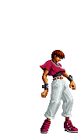

Chris
Origem
Chris é uma pequena criança inocente que tem de viver com a maldição de ser o "hospedeiro" da força de Orochi. Embora Chris pareça ser um garoto bonito e divertido (embora ele odeie que toquem em sua cabeça), seu pequeno segredo escondido pode levar o mundo à sua destruição!
Segundo a lenda, um garoto nascerá com o poder de Orochi, e quando ele finalmente acordar, Orochi aparecerá para o mundo mais uma vez, e o caos irá prevalecer. Alguém pode até pensar que Chris poderia ser a última pessoa na face da Terra que se preocuparia com Orochi, mas estaria enganado. De fato, ele é um dos quatro Reis Sagrados de Orochi, capaz de manipular, quando na sua forma poderosa, a chama roxa da morte, a mesma que Iori manipula.
Desde que se lembra, Chris nunca teve pais. Ele se criou sozinho, dependendo apenas de si mesmo. Ele também aprendeu a cozinhar e arrumar as coisas sozinho. Ele também ficou um pouco anti-social, já que ficara chateado por todos quererem admirar sua pequena beleza. Entretanto, um dia, Chris fora encontrado na rua por um jovem chamado Yashiro Nanakase. Parecia que ele queria formar uma banda musical, logo Chris imediatamente lhe fala sobre suas habilidades na bateria. Yashiro ficou meio confuso, mas algo além disso estava o atraindo à aquela criança. Yashiro deu para Chris uma vaga na banda, e não se arrependeu. Assim começou a turnê da banda musical, liderada por Yashiro, Shermie e Chris. Chris considerava Yashiro e Shermie como os seus melhores amigos no mundo... talvez seus ÚNICOS amigos... Assim como Yashiro, ele também sentia que havia algo além da amizade entre os três.
Muitos anos se passaram, e a nova banda musical conseguiu bastante atenção. Porém, em breve, eles iriam descobrir suas posições no rank mundial... Convidados a particiar de um show no Japão, a banda viajou com bastante entusiasmo e emoção. Suas primeiras estrelas estavam surgindo!! Entretanto, quando eles chegam ao local do show, o organizador lhe fala que eles devem esperar a vez deles. Yashiro pensava que eles seriam a melhor banda do show, mas parece que uma outra banda tomara o seu lugar. De fato, a multidão estava sendo agitada por uma outra banda no palco. Chris considerou o homem de cabelo vermelho como o líder da banda. Yashiro se irritou, e todos foram embora.
Em breve, Yashiro "inscreveu" a banda no torneio The King of Fighters em 1997. Ele o via como a oportunidade perfeita para se vingar do homem de cabelo vermelho que roubou a sua posição, já que ele também havia entrado no torneio. Seu nome parecia ser "Iori Yagami". Shermie e Chris realmente não sabiam o que fazer: ele nunca haviam lutado antes. Mas Chris também estava decidido, já que iria brincar e se divertir bastante (Chirs é uma criança!!!!!). Assim, a "equipe dos novatos" (New Face Team) nasceu e entrou no torneio.
Entretanto, não demorou muito para que algumas coisas estranhas começem a acontecer. A "equipe novata" começa a se sentir estranha, mas Chris já ficou absolutamente selvagem. Os seus sangues de Orochi começaram a acordar, mas em Chis o efeito foi bem pior. Sendo o "hospedeiro" do poder de Orochi, seu corpo foi totalmente controlado. Tendo lutado com os participantes do torneio, cada vez mais energia se concentrava no corpo de Chris. Logo, Orochi, no corpo de Chris, ficou forte o bastante para surgir novamente, como há 1800 anos! Porém, mesmo com uma força imensa, Orochi não pôde resistir ao poder daqueles que o prenderam 1800 anos atrás: os Kusanagi e os Yagami. Derrotado, ninguém sabe se Chris sobreviveu à batalha ou não.
Chris, mesmo sendo um jovem bonitinho, odeia ser tratado como tal: ou seja, ser tocado na cabeça significa irritação na certa! De fato, ele é bem quieto e anti-social. Seus únicos amigos são Yashiro e Shermie. Apesar de Orochi morar em seu corpo, Chris gosta de lutar por mera diversão, não por violência. Ele também imita constantemente as habilidades dos oponentes, e, algumas vezes, as suas próprias.
